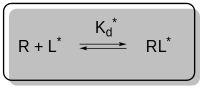
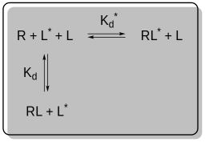
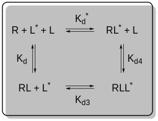

Exact Kd models
BindCurve implements several exact models that allow for direct fitting of \(K_d\) from both direct and competitive binding experiments, given some crucial informations about the system are known. These models are based on the assumption that the observed binding curve could be related to the bound fraction of the labeled ligand. This quantity is denoted as \(F_b^*\) and is defined as:
\[ F_b^* = \frac{[RL^*]}{[L^*]_T} \]
where \([RL^*]\) is the concentration of the complex of receptor and labeled ligand, and \([L^*]_T\) is the total concentration of the labeled ligand.
Direct binding
What function to use: fit_Kd_direct

In direct binding, the system is composed of receptor \(R\) and labeled ligand \(L^*\) which form complex \(RL^*\). This binding equilibrium is described by a dissociation constant \(K_d^*\). For such a system, \(F_b^*\) could be related to the concentration of free receptor \([R]\) by the equation
\[ F_b^* = \frac{[RL^*]}{[L^*]_T} = \frac{[R]}{K_d^* + [R]} \]
To allow for a proper description of the dependent variable, the general framework for direct binding is defined as
\[ y = ymin + (ymax - ymin) \frac{[R]}{K_d^* + [R]} \]
Direct binding - simplified
Model name: dir_simple
In this simplified model, the concentration of the free receptor \([R]\) is approximated by the total concentration of the receptor \([R]_T\). Thus, \([R]\) is simply given as: \[ [R] = [R]_T \]
Direct binding - specific
Model name: dir_specific
To properly describe direct binding beyond the simplified approximation above, let us look at an exact model. The dissociation constant \(K_d^*\) is defined as: \[ K_d^* = \frac{[R][L^*]}{[RL^*]} \]
Conservation of mass requires that: \[ [L^* ]_T = [L^*] + [RL^*] \] \[ [R]_T = [R] + [RL^*] \]
where \([R]_T\) is the total concentration of the receptor and \([L^*]\) is the concentration of free labeled ligand. Thus, \([RL^*]\) is calculated as: \[ [RL^*] = \frac{[R] [L^* ]_T}{K_d^* + [R]} \]
From the equations above, \([R]\) can be expressed in a quadratic equation: \[ [R]^2 + a[R] + b = 0 \]
where the coefficients are calculated as: \[ a = K_d^* + [L^*]_T - [R]_T \] \[ b = -K_d^* [R]_T \]
The physical solution for \([R]\) is calculated as the positive root using the quadratic formula:
\[ [R] = \frac{-a + \sqrt{a^2 - 4b}}{2} \]
Direct binding - total
Model name: dir_total
Nonspecific binding (immobilization) of the labeled ligand \(L^*\) can be modeled by introducing a dimensionless, non-negative parameter \(N^*\). In this case, the dissociation constant \(K_d^*\) is defined in the same way as above: \[ K_d^* = \frac{[R][L^*]}{[RL^*]} \]
Now, the conservation of mass requires that: \[ [L^* ]_T = [L^*] + [RL^*] + N^*[L^*] \] \[ [R]_T = [R] + [RL^*] \]
Thus, \([RL^*]\) is calculated as: \[ [RL^*] = \frac{[R][L^*]_T}{K_d^*(1+N^*) + [R]} \]
Again, \([R]\) can be expressed in a quadratic equation: \[ [R]^2 + a[R] + b = 0 \]
where the coefficients are calculated as: \[ a = K_d^*(1+N^*) + [L^*]_T - [R]_T \] \[ b = -K_d^*[R]_T(1+N^*) \]
The physical solution for \([R]\) is again calculated using the quadratic formula: \[ [R] = \frac{-a + \sqrt{a^2 - 4b}}{2} \]
Clearly, the introduction of \(N^*\) leads to a model where the dissociation constant \(K_d^*\) is scaled by a factor of \((1+N^*)\). Thus, the total binding is modeled as specific binding defined by \(K_d^*\) and a nonspecific binding scaling term depending on \(N^*\). For example, if we consider \(N^* = 0.5\), the resulting effective dissociation constant for total binding in this model would be \(1.5K_d^*\) (total binding would be 150% of the specific binding). Finally, if \(N^* = 0\) (there is no nonspecific binding), the model collapses to the case for specific binding only.
Complete competitive binding (three-state models)
What function to use: fit_Kd_competition

In three-state models, the system is composed of receptor \(R\), labeled ligand \(L^*\), and unlabeled ligand \(L\). The formation of complex \(RL^*\) is described by a dissociation constant \(K_d^*\), while the formation of complex \(RL\) is described by a dissociation constant \(K_d\). For such a system, \(F_b^*\) could be related to the concentration of free receptor \([R]\) by the equation
\[ F_b^* = \frac{[RL^*]}{[L^*]_T} = \frac{[R]}{K_d + [R]} \]
To allow for a proper description of the dependent variable, the general framework for competitive binding is defined as
\[ y = ymin + (ymax - ymin) \frac{[R]}{K_d + [R]} \]
Complete competitive binding - specific
Model name: comp_3st_specific
References: Wang 1995, Roehrl 2004
Dissociation constants in the three-state model are defined as:
\[ K_d^* = \frac{[R][L^*]}{[RL^*]} \]
\[ K_d = \frac{[R][L]}{[RL]} \]
Conservation of mass requires that:
\[ [L^* ]_T = [L^*] + [RL^*] \]
\[ [L]_T = [L] + [RL] \]
\[ [R]_T = [R] + [RL^*] + [RL] \]
Thus, the concentrations of the complexes are calculated as:
\[ [RL] = \frac{[R][L]_T}{K_d + [R]} \]
\[ [RL^*] = \frac{[R][L^*]_T}{K_d^* + [R]} \]
From the above equations, \([R]\) can be expressed in a cubic equation:
\[ [R]^3 + a[R]^2 + b[R] + c = 0 \]
Where the coefficients are calculated as:
\[ a = K_d^* + K_d + [L^*]_T + [L]_T - [R]_T \]
\[ b = K_d^*([L]_T - [R]_T) + K_d([L^*]_T - [R]_T) + K_d^* K_d \]
\[ c = - K_d^* K_d [R]_T \]
The physical solution for \([R]\) can be calculated analytically using the equation:
\[ [R] = -\frac{a}{3} + \frac{2}{3} \sqrt{(a^2 - 3b)} \cos\left(\frac{\theta}{3}\right) \]
The concentrations of both complexes are calculated as:
\[ [RL^*] = \frac{[L^*]_T \left(2 \sqrt{(a^2 - 3b)} \cos\left(\frac{\theta}{3}\right) - a\right)}{3K_d^* + \left(2 \sqrt{(a^2 - 3b)} \cos\left(\frac{\theta}{3}\right) - a\right)} \]
\[ [RL] = \frac{[L]_T \left(2 \sqrt{(a^2 - 3b)} \cos\left(\frac{\theta}{3}\right) - a\right)}{3K_d + \left(2 \sqrt{(a^2 - 3b)} \cos\left(\frac{\theta}{3}\right) - a\right)} \]
The angle \(\theta\) is defined as:
\[ \theta = \arccos\left(\frac{-2a^3 + 9ab - 27c}{2 \sqrt{(a^2 - 3b)^3}}\right) \]
Complete competitive binding - total
Model name: comp_3st_total
References: Roehrl 2004
Nonspecific binding of the unlabeled ligand can be modeled by introducing a dimensionless, non-negative parameter \(N\). In such case, the dissociation constants \(K_d^*\) and \(K_d\) are defined the same way as above, and the conservation of mass now requires that:
\[ [L^* ]_T = [L^*] + [RL^*] \]
\[ [L]_T = [L] + [RL] + N[L] \]
\[ [R]_T = [R] + [RL^*] + [RL] \]
From the above equations, \([R]\) can again be expressed in a cubic equation:
\[ [R]^3 + a[R]^2 + b[R] + c = 0 \]
Where the coefficients are calculated as:
\[ a = K_d^* + (1+N)K_d + [L^* ]_T + [L]_T - [R]_T \] \[ b = K_d^* ([L]_T - [R]_T) + (1+N)K_d ([L^* ]_T - [R]_T) + (1+N)K_d^* K_d \] \[ c = -(1+N) K_d^* K_d [R]_T \]
The physical solution for \([R]\) can be calculated analytically using the same set of equations as above. Analogous to the direct binding case, the introduction of \(N\) leads to a model where \(K_d\) is scaled by a factor of \((1+N)\).
In models of competitive binding, the nonspecific binding of the labeled ligand (\(N^*\)) is neglected as it is assumed that labeled ligands with significant nonspecific immobilization would not be used for such experiments.
Incomplete competitive binding (four-state models)
What function to use: fit_Kd_competition

In four-state models, the system is also composed of receptor \(R\), labeled ligand \(L^*\), and unlabeled ligand \(L\). However, in addition to complexes \(RL^*\) and \(RL\), a ternary complex \(RLL^*\) is also considered. The dissociation constants \(K_d^*\) and \(K_d\) are defined as in the three-state model, and the formation of \(RLL^*\) from \(RL\) and \(L^*\) is described by dissociation constant \(K_{d3}\). The constant \(K_{d4}\) is not used in the model.
For the four-state models, \(F_b^*\) and the general framework of the model stay the same as for three-state systems and is written as
\[ F_b^* = \frac{[RL^*]}{[L^*]_T} = \frac{[R]}{K_d + [R]} \]
\[ y = ymin + (ymax - ymin) \frac{[R]}{K_d + [R]} \]
Incomplete competitive binding - specific
Model name: comp_4st_specific
References: Roehrl 2004
Dissociation constants in the four-state model are defined as:
\[ K_d^* = \frac{[R][L^*]}{[RL^*]} \]
\[ K_d = \frac{[R][L]}{[RL]} \]
\[ K_{d3} = \frac{[RL][L^*]}{[RLL^*]} \]
\[ K_{d4} = \frac{[RL^*][L]}{[RLL^*]} \quad \text{(not used)} \]
Conservation of mass requires that:
\[
[L^*]_T = [L^*] + [RL^*] + [RLL^*]
\]
\[ [L]_T = [L] + [RL] + [RLL^*] \]
\[ [R]_T = [R] + [RL^*] + [RL] + [RLL^*] \]
Thus, concentrations of the complexes are calculated as:
\[
[RL^*] = \frac{[R]([L^*_T] - [RLL^*])}{K_d^* + [R]} \quad
\]
\[ [RL] = \frac{[R]([L_T] - [RLL^*])}{K_d + [R]} \quad \]
\[ [RLL^*] = \frac{[RL]([L^*_T] - [RL^*])}{K_{d3} + [RL]} \quad \]
From the above equations, \([R]\) can be expressed in a quintic equation:
\[
a[R]^5 + b[R]^4 + c[R]^3 + d[R]^2 + e[R] + f = 0
\]
The coefficients \(a\), \(b\), \(c\), \(d\), \(e\), and \(f\) are quite lengthy and can be found in the source code. There is no analytical solution to the quintic equation, but it can be solved numerically.
Incomplete competitive binding - total
Model name: comp_4st_total
References: Roehrl 2004
In analogy to the other models, total binding in the comp_4st_total model is modeled by scaling \(K_d\) by a factor of \((1 + N)\).